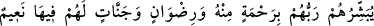
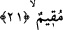
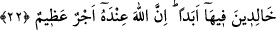

meydanında kaybetmek suretiyle “savaşanların” bu yüksek vasıfları sebebiyle “Allah
katında dereceleri daha büyüktür.” Yani bunların (iman, hicret ve cihad) dışında -
sikâyet ve imâret de dâhil olmak üzere- bütün kemâlâta sâhip olsalar bile kim olursa
olsun bu vasıflara sahip olmayan kimselerden Allah katında onların rütbeleri daha
yüksek ve nâil olacakları ikram daha büyüktür.
Haddâdî der ki: “Kâfirlerin hiçbir derecesi olmamasına rağmen ayette müminlerin
mertebesinin “daha yüce, daha büyük” olduğunun beyan edilmesi, kâfirlerin kendi
itikadlarınca Allah katında bir derece elde edeceklerine olan yanlış inançlarına işaret
etmek içindir. Bu durum şu âyette olduğu gibidir: “O gün cennet halkının kalacakları
yer çok huzurlu ve dinlenecekleri yer pek güzeldir.” (el-Furkan, 25/24).
“İşte” bu vasıfları taşıyanlar “kurtuluşa erenler” büyük kurtuluş veya mutlak
kurtuluş kendilerine mahsus olanlar “onlardır.” Sanki bunların dışındakilerin kurtuluşu,
onlarınkine nisbetle kurtuluş değildir.
İkinci tefsîre göre bu ifâde müminlerden hacılara su dağıtmayı (sikâyet) ve Kâbe’yi
imar etmeyi (imâret) hicret ve cihada tercih edenler hakkında bir azarlamadır.
21. Rableri onlara kendisinden bir rahmet, rızâ ve içinde sürekli kalacakları
nimeti bol cennetleri müjdeler.
“Rableri onlara” dünyada peygamberlerin diliyle “kendisinden” büyük “bir
rahmet,” -ki o âhirette azabdan kurtulmaktır- “rıza” onlardan tamamen hoşnut olmayı
“ve içinde sürekli kalacakları nimeti bol” nimetleri bitip tükenmeyen “cennetleri”
yüce bahçeleri “müjdeler.”
22. Orada ebedi kalacaklardır. Şüphesiz, büyük mükafat Allah katındadır.
“Orada” yâni cennetlerde “ebedi kalacaklardır. Şüphesiz büyük mükafat” cennette
ölçüye gelmeyen bol sevap “Allah katındadır.” O’nun katında dünya mükâfâtlarının bir
değeri yoktur.
Keşfu’l-esrâr’da şöyle denmektedir: Rahmet, âsîler içindir; rıdvan ise itaatkâr olanlar
için. Cennetse bütün müminler için. “Rahmet”i takdim etmesinin sebebi; isyankârlar,
ümitsizlik kalemini hallerinin yazılı olduğu sayfaların üzerine çeksinler diyedir. Çünkü
günah ne kadar büyük olsa da rahmet ondan daha büyüktür.